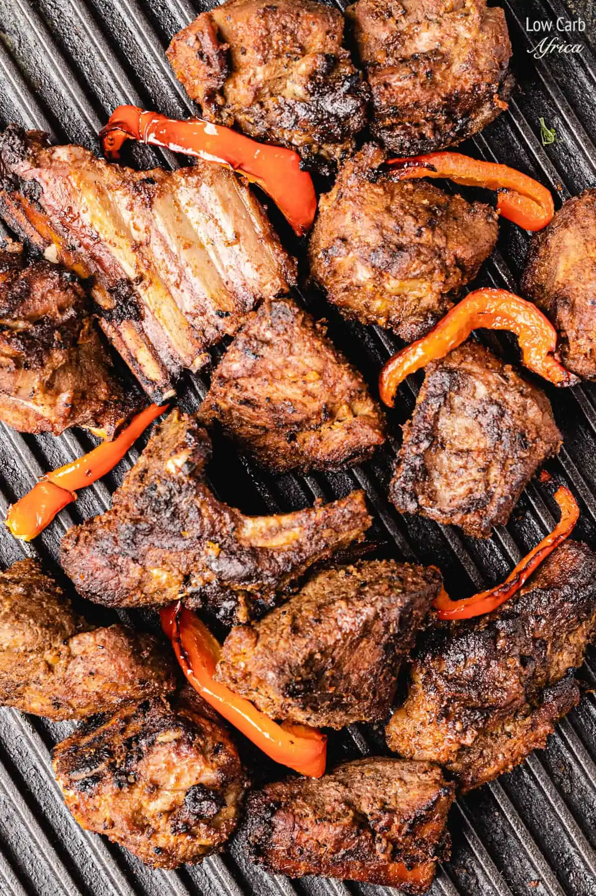

Nyama choma recipe

Nyama choma is a beloved Kenyan dish that holds a special place in the hearts and palates of many. Translated as "grilled meat" in Swahili, Nyama choma is a flavorful and succulent dish made from roasted or grilled meat, most commonly goat or beef.
How to prepare Nyama choma
Ingredients
- 2 kg (4.4 lbs) beef or goat meat, cut into large pieces
- 2 tablespoons vegetable oil
- 4 cloves of garlic, minced
- 2 tablespoons ginger paste
- 1 tablespoon paprika
- 1 tablespoon cayenne pepper
- 1 tablespoon ground cumin
- 1 tablespoon ground coriander
- 1 teaspoon black pepper
- 1 teaspoon salt
- Fresh lemon juice, for drizzling
Instructions
- Preheat the grill or barbecue to medium-high heat.
- In a bowl, combine the minced garlic, ginger paste, paprika, cayenne pepper, ground cumin, ground coriander, black pepper, salt, and vegetable oil. Mix well to create a marinade.
- Rub the marinade all over the pieces of meat, ensuring they are evenly coated. Let the meat marinate for at least 1 hour, or preferably overnight in the refrigerator for enhanced flavor.
- Once the grill is hot, place the marinated meat on the grill grates. Allow the meat to cook for about 10-15 minutes on each side, or until it reaches your desired level of doneness. You can adjust the cooking time based on the thickness of the meat and your preference for rare, medium, or well-done.
- While grilling, you can baste the meat with any remaining marinade or a mixture of melted butter and lemon juice for added flavor.
- Once the meat is cooked to your liking, remove it from the grill and let it rest for a few minutes.
- Slice the Nyama Choma into smaller pieces for serving, and drizzle with fresh lemon juice for an extra tangy kick.
- Serve the Nyama Choma hot as a main dish with your choice of sides such as Ugali (maize meal), chapati, or a refreshing salad like Kachumbari.
This nyama choma recipe can serve approximately 4 to 6 people, depending on the portion size and individual appetites. Adjustments can be made to the quantities of ingredients based on the number of servings desired.
Back to homepage